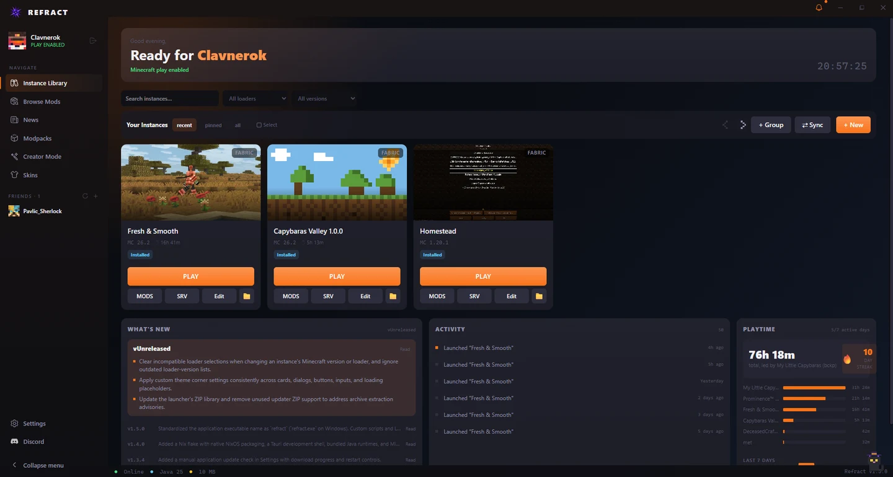

RefractMC
A modern, open-source Minecraft launcher. One home for your instances, mods, and next adventure, on Windows, macOS, and Linux.
- React
- TypeScript
- Tauri
- Rust
more about the build
- downloads
- 8,000+
- daily active users
- 300+
- platforms
- 3
Project milestones from my resume.
Built cross-platform support for Vanilla, Fabric, Forge, Quilt, and NeoForge installations.
Developed the Rust/Tauri backend for authentication, Java management, backups, content updates, and server monitoring. Added HTTPS validation, redirect checks, and cryptographic file verification.